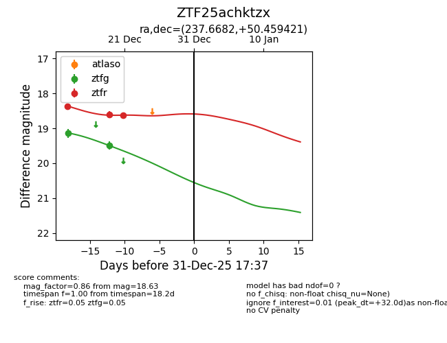
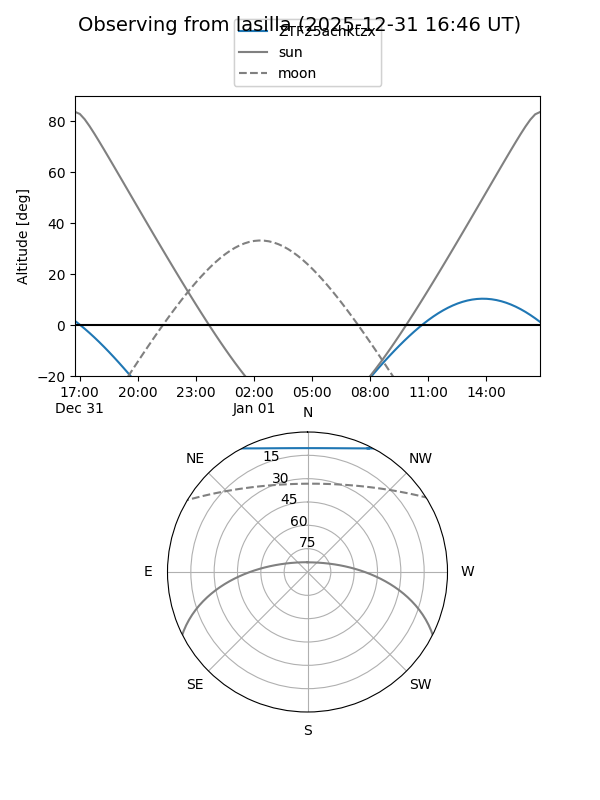
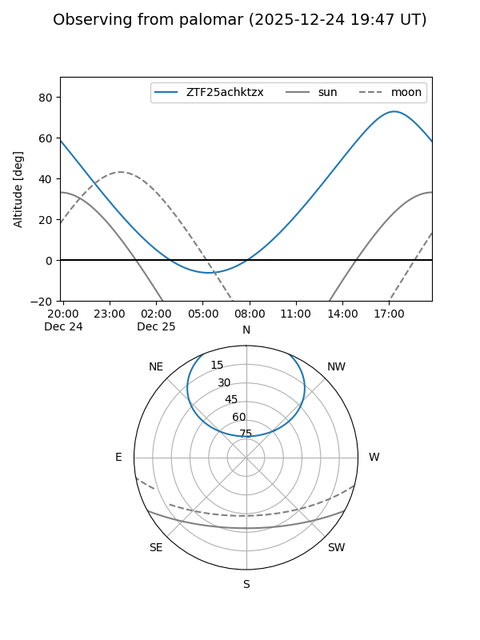
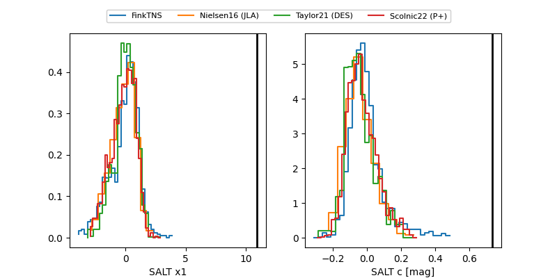

ZTF25achktzx
Target ZTF25achktzx at 2025-12-21 14:02
Aliases and brokers:
FINK: fink-portal.org/ZTF25achktzx
Lasair: lasair-ztf.lsst.ac.uk/objects/ZTF25achktzx
ALeRCE: alerce.online/object/ZTF25achktzx
alt names
ZTF25achktzx (ztf,fink_ztf)
Coordinates:
equatorial (ra, dec) = 237.6682,+50.45942
equatorial (HMS+DMS) = 15:50:40.36,+50:27:33.91
galactic (l, b) = (79.8880,+48.90465)
Flags:
Photometry:
last ztfg=19.49, ztfr=18.63
2 ztfg, 3 ztfr detections
Lightcurve

Visibility


Additional plots
